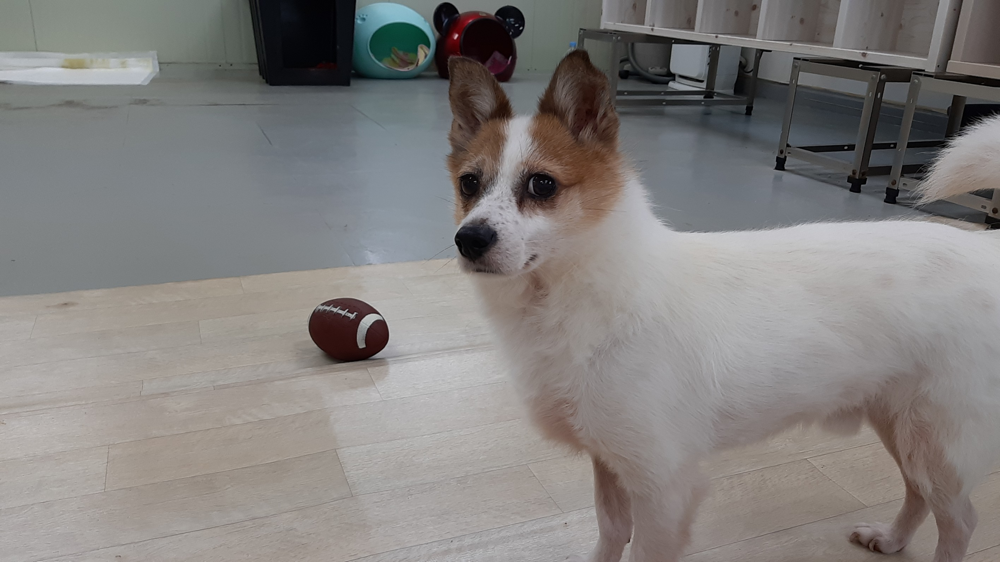

선생님 안녕하세요! 저는 고3 디미고 학생 박서연이라고 합니다.
강의 들으면서, 똑같이 만들지 않고 만들고 싶은대로 만들라고 해서, 제가 다니고있는 유기견센터의 멍멍이를 소개하고자 이 웹페이지를 만들게 되었습니다.
예전에 동아리에 들어가서 배웠을 때는 어렵기만 했는데, 지금 다시 배우니깐 예전보다 쉽고, 재밌어요! 웹을 만들 수 있다니ㅣㅣㅣㅣㅣ처음으로 배우는 중이라 부족한 점이 많겠지만, 잘 봐주세요!

입양 방법 : 1. "유기동물사랑나누기" 카페에 가입한다.
"유기통물사랑나누기"" 클릭하시면 바로 카페로 들어갈 수 있습니다.